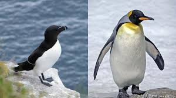

Pumba le lionceau blanc est né

Carnet rose ou plutôt carnet blanc à Zooland : un lionceau blanc est né le 26 Janvier à 00h52. La gestation de sa mère, "Malindi", a duré 110 jours. Leur père, "Bouba", est selon le zoo "un très beau lion qui pèse 240 kg". Le couple est arrivé à Lyon en 2013, en provenance du zoo de La Flèche, dans la Sarthe.
Trois des quatre petits lions blancs (deux mâles et une femelle) est élevé par sa mère, et le public peut déjà les apercevoir. En revanche, ses soins sont complétés par un biberon donné par le personnel de Zooland.
Le lion blanc, originaire d'Afrique du Sud, est une espèce menacée. Il est malheureusement devenu rarissime dans la nature, traqué par les chasseurs amateurs de trophées.
Les suricates

Surnommé « sentinelle du désert », le suricate est apparu dans les régions arides d'Afrique australe au quaternaire. Cette petite mangouste, dont les lointains ancêtres sont asiatiques, s'est peu à peu adaptée au climat désertique du Kalahari, où elle vit en groupes liés par l'affection.
Une mangouste affectueuse, surnommé « sentinelle du désert », le suricate est apparu dans les régions arides d'Afrique australe au quaternaire. Cette petite mangouste, dont les lointains ancêtres sont asiatiques, s'est peu à peu adaptée au climat désertique du Kalahari, où elle vit en groupes liés par l'affection.
L'affection surprenante que se témoignent ces animaux resserre les liens entre les individus et assure la cohésion du groupe, élément indispensable de survie pour ces petites mangoustes diurnes des savanes et des déserts. Dans cet environnement hostile, la défense contre les prédateurs nécessite la vie en groupes importants, qui ne dépassent toutefois pas une trentaine d'animaux chacun ; cela semble être la taille optimale pour qu'un groupe vivant dans le désert puisse se nourrir à peu près régulièrement.
La structure sociale n'est pas fondée sur un couple dominant entouré des petits et des juvéniles, comme chez beaucoup d'autres mangoustes ; le groupe comprend plusieurs mâles et femelles en âge de se reproduire, et leur progéniture. Tous vivent dans le même terrier et ils sont très solidaires.
Différencier le pingouin du manchot

Les pingouins et les manchots sont des oiseaux marins. Ils ont tous les deux un plumage noir et blanc et ils vivent dans les régions froides. C'est pourquoi on les confond souvent.
Alors, comment reconnait-on les pingouins et les manchots ?
Ils ont tous les deux un plumage noir et blanc.Ils pêchent tous les deux des poissons en nageant sous l’eau.Ils se regroupent tous les deux en colonie chaque année pour se reproduire (mettre au monde leurs bébés) et s’occuper d'eux.
Les pingouins vivent dans l’hémisphère nord. Les manchots vivent dans l’hémisphère sud. Les pingouins volent alors que les manchots ne savent pas voler. Mais les manchots sont des champions de nage grâce à leurs ailes athrophiées (devenues toutes petites) qui leur servent de nageoire ! Le pingouin vole. Le manchot ne sait pas voler.
Les pingouins appartiennent à la famille des "Alicidés". Dans cette famille,on trouve aussi le macareux moine, le guillemot etc…
Les manchots appartiennent à la familles des "sphénisciformes". On y trouve le manchot empereur, le manchot royal, le manchot Adélie, le manchot papou, le manchot à jugulaire, le manchot bleu, le manchot de Magellan, le manchot du Cap, le gorfou macaroni, le gorfou sauteur… etc….